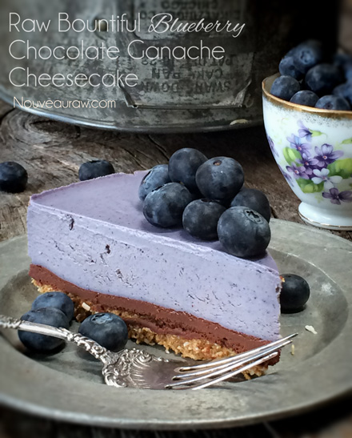
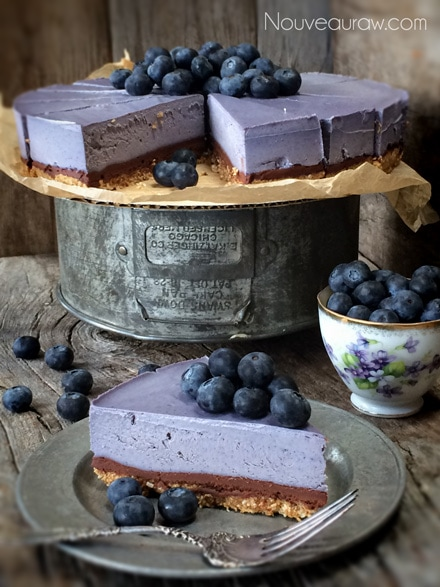
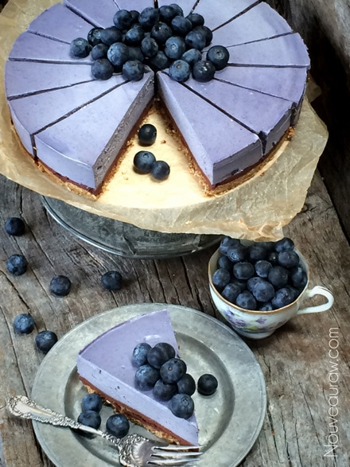
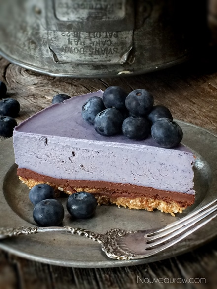
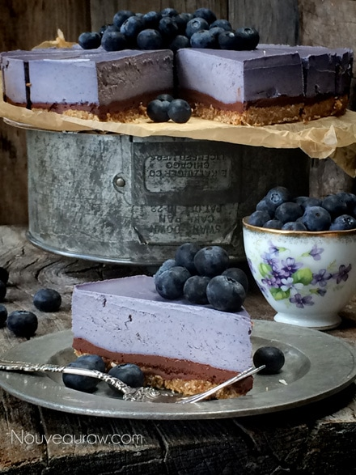

Bountiful Blueberry Chocolate Ganache Cheesecake

~ raw, vegan, gluten-free ~
With the silk-like texture of the blueberry cheesecake filling, the thick richness of chocolate ganache… this dessert is quite a culinary experience. When blueberries are in season… this cheesecake is a must add to the rotation of your desserts.
Blueberries start off as a green little berry, so just how do they transform into a plump, blue pockets of flavor? It all starts with the fertilization of the ovary. A flower buds and swells rapidly for about a month and then comes to a halt. It is then when the small green berries develop, but amazingly they don’t grow in size, they stay the same size. On the bottom of the berry, it creates what is called a calyx, while on the other end of the berry a depressed ring forms where the stem is attached. The calyx end turns purple which the rest of the berry becomes translucent in appearance.
On the bottom of the berry, it creates what is called a calyx, while on the other end of the berry a depressed ring forms where the stem is attached. The calyx end turns purple which the rest of the berry becomes translucent in appearance.
With a little time, the berry turns a light purple as it develops, then turning a deeper purple color often with a grayish cast. All the while the color is changing so is the size of the berry.
If your blueberries are not quite ripe enough… place an apple in the bag with them. The ethylene gas from the apple will cause the blueberries to ripen faster. Remember, the quality of taste in your blueberries have a direct effect on the overall taste of the cheesecake. We can’t rush perfection, but we can nudge it along.
I have made this cheesecake several times and each cake turns out a different shade… all based on the blueberry. When I first blended this batter it was the most vibrant blue/purple that you have ever seen. It was blue-gasmic! I even had to hunt my husband down just to show him the blender filled with this most amazing color. As the cheesecake settled and firmed up the color faded some but as you can see by this un-retouched photo… it stayed a gorgeous purplish color!

Ingredients:
Yields one 9 1/2″ Springform pan
Crust:
- 2 cups (172 grams) coconut flakes, unsweetened
- 1/4 cup (35 grams) lucuma powder
- 1/8 tsp sea salt
- 1/2 cup (175 grams) date paste
- 1 tsp vanilla extract
Chocolate ganache layer:
- 3/4 cup (248 grams) maple syrup
- 3/4 cup (87 grams) raw cacao powder
- 1/3 cup (90 grams) cold-pressed coconut oil, melted
- 1/8 tsp Himalayan pink salt
Blueberry filling:
- 3 cups (425 grams) raw cashews, soaked 2 + hours
- 3/4 cup (248 grams) maple syrup
- 2 cups organic blueberries
- 1/4 cup water
- 1 Tbsp vanilla extract
- 1/2 tsp NuNaturals liquid stevia
- 1/4 tsp Himalayan pink salt
- 1 cup (229 grams) raw cold-pressed coconut oil
- 3 Tbsp (21 grams) sunflower lecithin powder or liquid
Preparation:
Crust:
- Assemble a Springform pan with the bottom facing up, the opposite way from how it comes assembled. This will help you when removing the cheesecake from the pan, not having to fight with the lip. Wrap the base with plastic wrap. This will make it easier to remove the pie when done… unless you plan on serving the cake on the bottom of the pan.
- In the food processor, fitted with the “S” blade, pulse the coconut, lucuma, and salt into small pieces.
- Add the date paste and vanilla. Process until the batter sticks together.
- Depending on your machine, you may need to stop the unit and scrape the sides down during this process.
- Test the batter by pinching it between your fingers. If it holds, it is ready.
- Distribute the crust evenly on the bottom of the pan, using even and gentle pressure. If you press too hard it might really stick bad to the base of the pan, making it hard to remove slices. You can either just make the crust on the bottom of the pan or you can also bring it up the sides. It is up to you.
- Set aside while you make the cheesecake batter.
Ganache:
- In a high-power blender combine the maple syrup, cacao, oil, and salt. Blend until completely smooth.
- Pour over the crust and spread it out evenly. Place in the freezer while you make the filling.
Filling:
- Drain the soaked cashews and discard the soak water. Place in a high-speed blender.
- In a high-powered blender combine the; cashews, maple syrup, blueberries, water, vanilla, stevia, and salt.
- Due to the volume and the creamy texture that we are going after, it is important to use a high-powered blender. It could be too taxing on a lower-end model.
- Blend until the filling is creamy smooth. You shouldn’t detect any grit. If you do, keep blending.
- This process can take 2-4 minutes, depending on the strength of the blender. Keep your hand cupped around the base of the blender carafe to feel for warmth. If the batter is getting too warm. Stop the machine and let it cool. Then proceed once cooled.
- You can use a different liquid sweetener if you are not comfortable with maple syrup. Just be aware of the different flavors and colors that the sweetener might impart in the cake.
- With a vortex going in the blender, drizzle in the coconut oil, and then add the lecithin. Blend just long enough to incorporate everything together. Don’t over-process. The batter will start to thicken.
- What is a vortex? Look into the container from the top and slowly increase the speed from low to high, the batter will form a small vortex (or hole) in the center. High-powered machines have containers that are designed to create a controlled vortex, systematically folding ingredients back to the blades for smoother blends and faster processing… instead of just spinning ingredients around, hoping they find their way to the blades.
- If your machine isn’t powerful enough or built to do this, you may need to stop the unit often to scrape the sides down.
- Pour the batter into the pan.
- Gently tap the pan on the counter to remove any air bubbles.
- Chill in the freezer for 4-6 hours and then in the fridge for 12 hours.
- Store the cheesecake in the fridge for 3-5 days or up to 3 months in the freezer. Be sure that they are well sealed to avoid fridge odors.



© AmieSue.com